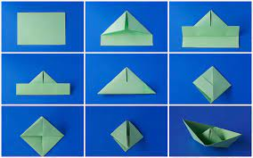

Origami designs

DOLPHINS CAN BE FOUND ALL OVER THE WORLD AND IN DIFFERENT ENVIRONMENTS
Dolphins have some of the most elaborate acoustic abilities in the animal kingdom.
They make a variety of sounds including whistles, clicks, squawks, squeaks, moans, barks, groans and yelps.
Bottlenose dolphins are one of the few species, along with apes and humans,
that have the ability to recognise themselves in a mirror.
This is considered 'reflective' of their intelligence.
are also among the few animals that have been documented using tools.
In Shark Bay in Western Australia,
dolphins fit marine sponges over their beaks to protect them from sharp,
harmful rocks as they forage for fish.

A boat is a watercraft of a large range of types and sizes, but generally smaller than a ship, which is distinguished by its larger size, shape, cargo or passenger capacity, or its ability to carry boats.
Until the mid-19th century most boats were made of natural materials, primarily wood, although reed, bark and animal skins were also used. Early boats include the bound-reed style of boat seen in Ancient Egypt, the birch bark canoe, the animal hide-covered kayak[19] and coracle and the dugout canoe made from a single log.
A boat is designed to float on water, and can be used for travel, recreation, sports, fishing, transportation, military use and for rescue operations.
How to make origami boat video